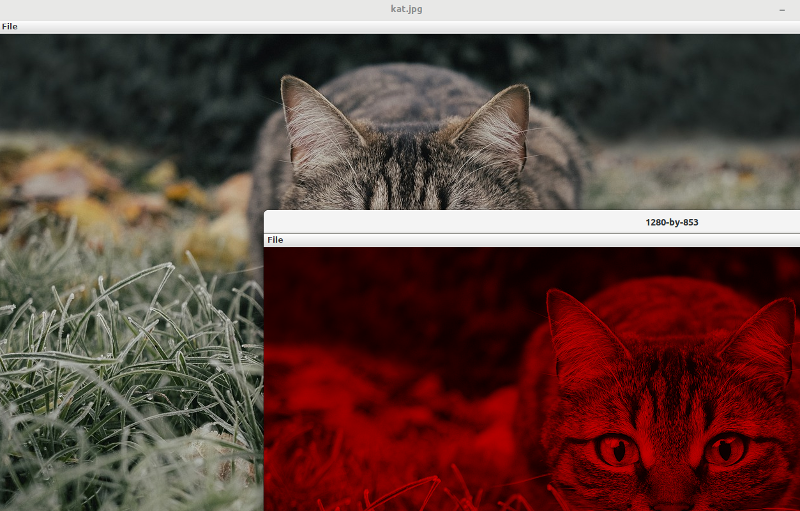

Practicum plaatjes met het decorator pattern#
Doel#
Verder oefenen met het decorator pattern
Plaatjes#
Deze opgave gaat over het bewerken van afbeeldingen.
Er zijn verschillende bewerkingen: Het veranderen van kleur, het roteren, vervagen, etc..
Deze bewerkingen kunnen in alle mogelijke combinaties gecombineerd worden met het decorator pattern.
Gebruik de volgende afbeelding voor deze opgave.
Klasse Picture#
In dit practicum wordt gebruik gemaakt van de klasse Picture. Deze klasse is onderdeel van de Standard Libraries van Robert Sedgewick en Kevin Wayne, https://introcs.cs.princeton.edu/java/stdlib/.
Met de constructor van picture kan een afbeelding uit een bestand worden ingeladen:
Picture picture = new Picture("kat.jpg");
De afbeelding wordt weergegeven door de methode show aan te roepen
picture.show();
Belangrijke informatie over de afbeelding is de breedte en hoogte uitgedrukt in aantal pixels. Deze zijn op te vragen met de methoden with en height.
Om een afbeelding te wijzigen, zijn methoden nodig om afzonderlijke pixels te lezen (get) en veranderen (set).
Er zijn verschillende manieren om een pixel op te slaan in een variabele.
De twee belangrijkste zijn:
een instantie van de klasse Color. Deze representeert de kleur van een pixel.
een integer, waarin de hoeveelheid rood, groen en blauw in een pixel zijn gecodeerd
Color#
De getter voor de kleur van een pixel, opgeslagen in een instantie van klasse Color, is get. De setter voor de kleur van een pixel, met een instantie van de klasse Color, is set.
De klasse Color is standaard onderdeel van Java: https://docs.oracle.com/javase/10/docs/api/java/awt/Color.html
Voorbeeld:
Picture picture = new Picture("kat.jpg");
int startx=(picture.width()-400)/2;
int starty=(picture.height()-400)/2;
for(int x=0; x<400; x++) {
for(int y=0; y<400; y++) {
Color color = picture.get(startx+x,starty+y);
color=color.brighter();
picture.set(startx+x,starty+y, color);
}
}
picture.show();
Hou er rekening mee dat Color immutable is.
RGB-integer#
De RGB-integer is een normale Java-integer, waar aan de hand van een formule een waarde is opgeslagen die bij een kleur hoort.
De getter voor de kleur van een pixel, opgeslagen in een RGB-integer, is getRGB. De setter voor de kleur van een pixel, met een RGB-integer, is setRGB.
Alle kleuren kunnen worden samengesteld uit een deel rood, een deel groen, en een deel blauw. De hoeveelheden rood, groen en blauw worden uitgedrukt in een unsigned 8-bit integer van 0 tot en met 255.
De integer is als volgt gecodeerd:
bits 23..16: rood
bits 15..8: groen
bits 7..0: blauw
De afzonderlijke waardes voor rood, groen en blauw kunnen als volgt worden gelezen uit een RGB-integer:
int rgb = picture.getRGB(x, y);
int red = (rgb >> 16) & 0xFF;
int green = (rgb >> 8) & 0xFF;
int blue = rgb & 0xFF;
De afzonderlijke waardes voor rood, groen en blauw worden (samen met transparantie, 0xFF000000) als volgt gecombineerd tot een RGB-integer:
rgb= 0xFF000000 + (red << 16) + (green << 8) + blue;
Voor veel effecten moeten berekeningen worden gemaakt met kleur-waardes.
Een praktijkvoorbeeld, waarbij een deel van een afbeelding rood wordt gemaakt:
Picture picture = new Picture("kat.jpg");
int startx=(picture.width()-400)/2;
int starty=(picture.height()-400)/2;
for(int x=0; x<400; x++) {
for(int y=0; y<400; y++) {
int rgb = picture.getRGB(startx+x, starty+y);
int red = (rgb >> 16) & 0xFF;
int green = (rgb >> 8) & 0xFF;
int blue = rgb & 0xFF;
int avg=(red+green+blue)/3; // gemiddelde berekenen
red=avg; // gemiddelde intensiteit toekennen aan rood
green=0; // geen groen
blue=0; // geen blauw
rgb=0xFF000000 + (red<<16)+(green<<8)+blue; // 0xFF000000 -> transparantie
picture.setRGB(startx+x,starty+y,rgb);
}
}
picture.show();
Klasse ImageEffects#
Met de klasse ImageEffects is het mogelijk om een aantal eenvoudige effecten toe te passen op een afbeelding.
Begin van deze klasse:
public class ImageEffects {
private Picture picture;
ImageEffects(String filename) {
picture=new Picture(filename);
}
public Picture getOriginal() {
return new Picture(picture);
}
}
Het eerste effect is de methode doRed:
public Picture doRed()
Dit effect zorgt ervoor dat de volledige afbeelding in roodtinten zal zijn. Dit is hetzelfde effect als het voorbeeld dat is gegeven bij RGB-integer.
De methode geeft een kopie terug van de afbeelding waarop het effect is toegepast. Het origineel moet dus ongewijzigd blijven.
Een kopie maken van een afbeelding kan door middel van een constructor van Picture waarbij breedte en hoogte van een nieuwe afbeelding worden meegegeven:
int width=picture.width();
int height=picture.height();
Picture newPicture = new Picture(width, height);
Vervolgens is het een kwestie van pixels lezen van de originele afbeelding en schrijven naar de nieuwe afbeelding.
Testen kan als volgt:
ImageEffects imageEffects = new ImageEffects("kat.jpg");
imageEffects.getOriginal().show();
imageEffects.doRed().show();

Met deze test-code wordt zowel het origineel als de bewerkte afbeelding getoond.
Meer effecten#
Schrijf de onderstaande methoden. De werking is vergelijkbaar met de methode doRed.
doGrayScale#
De methode doGrayScale zet de afbeelding om naar grijstinten. De aanpak lijkt sterk op doRed. Een grijstint wordt gemaakt door voor elke pixel eerst het gemiddelde te bepalen van rood, groen en blauw. Vervolgens krijgen zowel rood, groen als blauw dat gemiddelde als waarde toegekend.
doBrighter en doDarker#
De methode doBrighter en doDarker maken de afbeelding iets lichter of donkerder. De aanpak is vergelijkbaar met het voorbeeld bij Color..
doMirror#
De methode doMirror spiegelt de afbeelding horizontaal of verticaal. De kleuren worden in dit geval niet bewerkt, maar de pixels worden in de kopie op een andere plek geplaatst. In geval van horizontaal spiegelen betekent dit de meest linker pixel helemaal naar rechts, en de meest rechter pixel komt helemaal links.
Om te bepalen of er horizontaal of verticaal gespiegeld wordt, wordt een parameter gebruikt van het type integer. De waarde 1 is horizontaal, de waarde 2 is verticaal. Maak constantes voor deze waardes:
public static final MIRROR_HORIZONTAL=1;
doBlur#
De methode doBlur blurt de afbeelding.
Dit is een ingewikkelde bewerking.
Het meest eenvoudige algoritme is de box blur. Bepaal voor elke pixel het gemiddelde van de kleur van de pixel zelf, en de 8 pixels er direct omheen. Kortom, de kleur-waardes van 9 pixels bij elkaar optellen en delen door 9. Dat gemiddelde wordt vervolgens toegekend aan de kleur van de pixel. Dit gebeurt afzonderlijk voor rood, groen en blauw.
De onderstaande pseudocode beschrijft het algoritme:
Box blur (image)
{
set newImage to image;
For x /*row*/, y/*column*/ on newImage do:
{
// Kernel would not fit!
If x < 1 or y < 1 or x + 1 == width or y + 1 == height then:
Continue;
// Set P to the average of 9 pixels:
X X X
X P X
X X X
// Calculate average.
Sum = image[x - 1, y + 1] + // Top left
image[x + 0, y + 1] + // Top center
image[x + 1, y + 1] + // Top right
image[x - 1, y + 0] + // Mid left
image[x + 0, y + 0] + // Current pixel
image[x + 1, y + 0] + // Mid right
image[x - 1, y - 1] + // Low left
image[x + 0, y - 1] + // Low center
image[x + 1, y - 1]; // Low right
newImage[x, y] = Sum / 9;
}
Return newImage;
}
Bron: https://en.wikipedia.org/wiki/Box_blur
Belangrijkste verschil met deze pseudocode is dat in deze situatie dit proces afzonderlijk voor zowel rood, groen als blauw uitgevoerd moet worden.
Decorator pattern#
De effecten in de klasse ImageEffects kunnen gecombineerd worden. Bijvoorbeeld een afbeelding horizontaal spiegelen, wat lichter maken en omzetten naar grijstinten. Omdat er zo veel verschillende combinaties zijn, is het decorator pattern heel geschikt.
De interface ImageProcessor#
De interface ImageProcessor beschrijft een klasse waarbij met de methode process een bewerking (of reeks bewerkingen) wordt uitgevoerd op een afbeelding. Het resultaat wordt teruggegeven.
public interface ImageProcessor {
public Picture process();
}
Ter herinnering het klassendiagram van het decorator pattern:
De interface ImageProcessor is het component.
Er zijn verschillende concrete componenten denkbaar. In deze situatie ligt het voor de hand om een bestand te verwerken aan de hand van een bestand, zoals ook in ImageEffects gebeurt. De klasse ImageProcessorFile is een concreet component die dat regelt.
Daarnaast is er een handvol decorators. Elke bewerking is een concrete decorator.
De abstracte klasse ImageProcessorDecorator is bij elke uitvoering van het decorator pattern vergelijkbaar. In dit geval bevat decorator een instantie van ImageProcessor, die via de constructor wordt meegegeven.
Zowel de abstracte klasse ImageProcessorDecorator als de conrete klasse ImageProcessorFile implementeren de interface ImageProcessor.
Maak de interface ImageProcessor.
Klasse ImageProssorFile#
Maak de klasse ImageProcessorFile.
Deze klasse lijkt op ImageEffects maar dan zonder de methoden voor effecten:
public class ImageProcessorFile implements ImageProcessor {
private Picture picture;
ImageProcessorFile(String filename) {
picture=new Picture(filename);
}
}
De klasse is nog niet af. De methode uit de interface ImageProcessor is niet geïmplementeerd. Implementeer deze methode zo eenvoudig mogelijk door enkel het teruggeven van picture.
Een basis ImageProcessor heeft geen effecten. Daarom volstaat het teruggeven van picture. De effecten worden door middel van decorators toegevoegd.
Abstracte klasse ImageProcessorDecorator#
Voordat decorators kunnen worden gemaakt, is een gemeenschappelijke superklasse nodig voor de decorators. In het decorator pattern wordt deze klasse Decorator genoemd. In deze situatie wordt de naam ImageProcessorDecorator gebruikt omwille van de leesbaarheid.
Schrijf de klasse ImageProcessorDecorator die voldoet aan het volgende:
De klasse is abstract
De naam van de klasse is ImageProcessorDecorator
De klasse implementeert de interface ImageProcessor
De klasse heeft één instantie variabele: ImageProcessor imageProcessor
De waarde van de instantie-variabele imageProcessor wordt doorgegeven via de constructor.
De methode uit de interface ImageProcessor wordt niet geïmplementeerd. Dat wordt volledig overgelaten aan de concrete decorators.
Een concrete decorator maken en testen#
Begin met het maken van één concrete decorator. Daarvoor is het eenvoudige effect uit de methode doRed geschikt.
Maak een klasse met de naam EffectRed, die de klasse ImageProcessorDecorator overerft.
Voorzie deze klasse van de benodigde constructor en implementeer de methode process.
De klasse ziet er dan als volgt uit:
public class EffectRed extends ImageProcessorDecorator {
public EffectRed(ImageProcessor imageProcessor) {
super(imageProcessor);
}
@Override
public Picture process() {
return null;
}
}
Gebruik de code uit de eerder gemaakte methode doRed voor de verdere implementatie van process.
Ook hier geldt dat een kopie van de afbeelding moet worden teruggegeven zonder het origineel te veranderen.
Nergens in de klasse is een instantie-variabele picture gedeclareerd. Waar moet de te bewerken afbeelding dan vandaan komen? Door de methode process aan te roepen van imageProcessor !
Of dit daadwerkelijk het origineel is, of een afbeelding die al door één of meer andere decorators is bewerkt, doet er niet doe. In het geval van testen met slechts één decorator weet je uiteraard zeker dat het wel om het origineel gaat.
Testen kan met eenvoudige regels code:
ImageProcessor imageProcessor = new EffectRed(new ImageProcessorFile("kat.jpg"));
imageProcessor.process().show();
Meer decorators maken#
Maak ook decorators van de overige effecten in klasse ImageEffects. Daarna zal de klasse ImageEffects overbodig zijn.
De methode doMirror heeft een argument om te bepalen of het spiegelen horizontaal of verticaal moet gebeuren. De methode process kan echter geen argument hebben. Mogelijke oplossing voor dit probleem is via de constructor doorgeven of een afbeelding horizontaal of verticaal gespiegeld moet worden.
Maak een instantie aan van imageProcessor die de afbeelding kat.jpg horizontaal spiegelt, wat lichter maken en omzet naar grijstinten.
Als alles goed is gegaan, is dit het resultaat:
Decorators dupliceren#
Sommige decorators kunnen meerdere keren gebruikt worden.
Bijvoorbeeld:
ImageProcessor imageProcessor = new EffectDarker(new ImageProcessorFile("kat.jpg"));
imageProcessor.process().show();
ImageProcessor imageProcessor2 = new EffectDarker(new EffectDarker(new ImageProcessorFile("kat.jpg")));
imageProcessor2.process().show();
Wat is het verschil tussen beide?
Voor welke decorators geldt dat het zinvol is om ze meerdere keren te gebruiken? Voor welke decorators is het niet zinvol? En voor welke decorators heeft het een negatief effect?